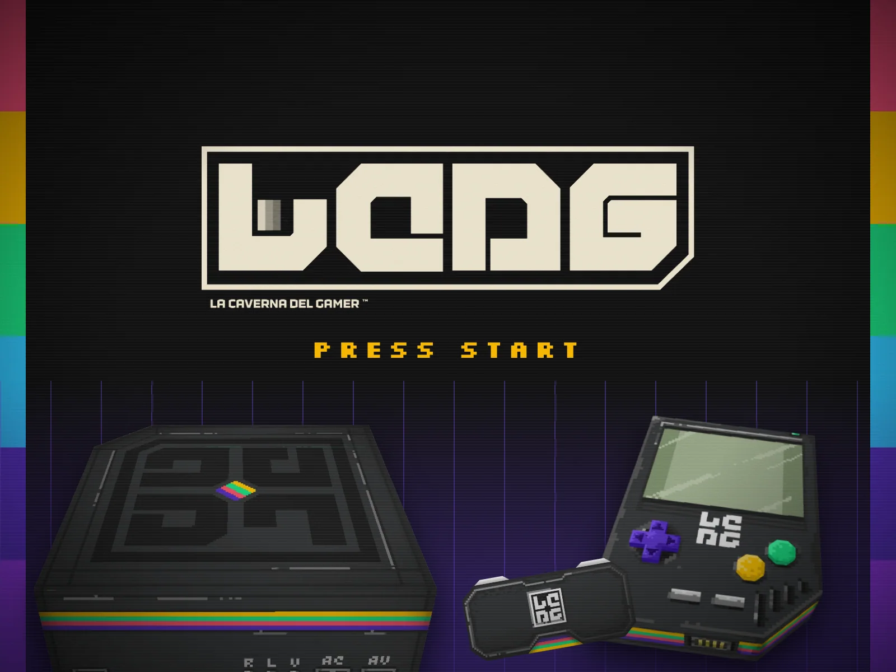

La Caverna del Gamer
Una marca de 8 bits para un canal con casi 700.000 suscriptores.

- 693.000suscriptores en YouTube
- +2.500vídeos publicados
- 2012año en que nació el canal
Fuentes: vidIQ, jul 2025
01El reto
Álvaro lleva desde 2012 hablando de videojuegos. Con miles de vídeos a la espalda, el canal necesitaba una identidad que ordenara todo: logotipo, miniaturas, directos y redes.
02La solución
Las siglas LCDG construidas como una sola pieza, con un píxel de colores que recuerda a las consolas clásicas. Alrededor, un sistema completo: plantillas de miniatura, overlays para Twitch, iconografía y consolas ilustradas y modeladas en 3D.
Logotipo
Tres composiciones de la marca y sus versiones de color.
Miniaturas
Plantillas para las portadas de vídeo y cómo se ven en el móvil.
Directos
Overlays para Twitch: escena de charla con las consolas como marco y escena de juego.
Proceso e ilustración
Bocetos, consolas en 3D e iconografía propia.
Profesionalidad y buen rollo. Trabajar con José es un gusto. Esa cercanía le ayuda a conocer mejor al creador y a establecer así una imagen de marca perfecta.
¿Quieres un proyecto así para tu marca?
Cuéntame tu idea en 2 minutos y te preparo una propuesta a medida.